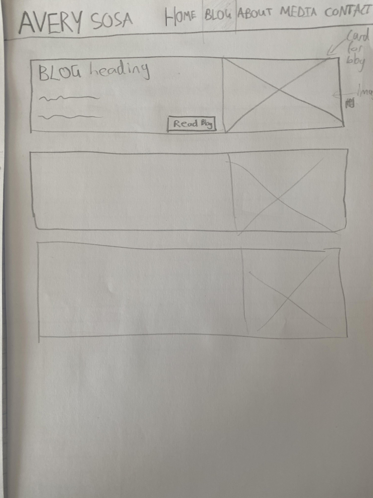

The navigation bar displayed here will be used for all pages. Due to the importance of a call to action for users, buttons will be added to direct users to different sections of the website. A selected accent colour will be used to draw user’s attention to the buttons. A larger banner photo of the character will be used and attempt to draw user attention. This will also serve as an element that uses the whole of the screen space as oppose to the content areas.
Previously all blogs were on the same page but to fall within the UI characteristics of minimalism and readability each blog was moved onto its own page. These blogs will be represented on the blog page as cards containing the blog title and detail relating to the blog. It will also include an image that relates to the blog.
The design philosophy focused on when planning the website were minimalism and ease of use. Many of the choices were made in order to increase ease of use by attempting to increase readability, decrease clutter and using commonly known design metaphors
Readability will be achieved by picking colours of text that does not contrast harshly with the background. The background will be a dark grey colour to reduce strain on the user’s eyes with text being a much lighter grey close to white. Another factor to increase readability of long pieces of text is the use of a container in which the maximum width of content areas is decreased. This ensures users do not have to read across the full length of a desktop screen.
A Minimal approach was to be taken. This led me to split sections of pages into different pages such as the blog posts. This allows for a more satisfying and less cluttered experience on each separate page.
The colour scheme will be very dark grey and white with an accent colour that draws user attention. The use of fewer colours adds to the minimalism aspect and makes the one accent colour standout a lot more and therefore draw the user’s attention.
{kind=link}
{kind=link}
{kind=link}
{kind=link}
{kind=link}
{kind=link}